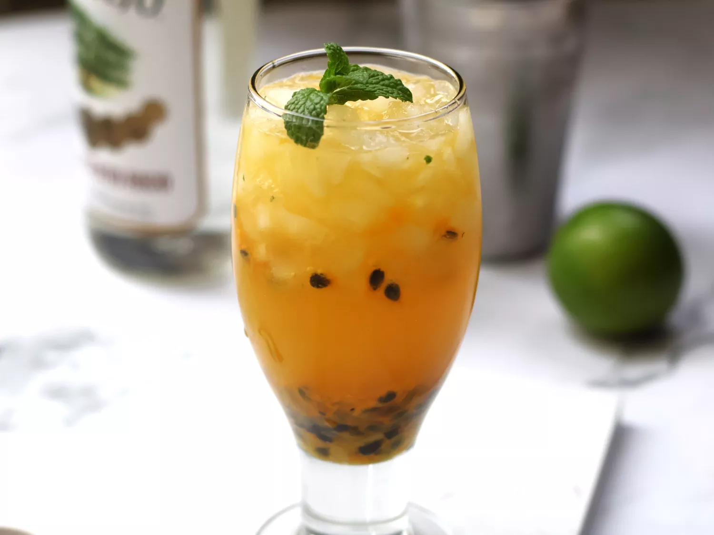

Home
Passion Fruit Mojito

Description
This tropical drink brings together frozen passion fruit pulp, fresh mint, lime juice, simple syrup, rim and club soda.This drink is refreshing and easy to make!
Ingredients
- 1 fluid ounce lime juice
- 1 1/2 fluid ounces simple syrup
- 8 mint leaves
- 2 fluid ounces white rum
- 2 cups ice cubes, or as needed
- 2 ounces frozen passion fruit pulp (with or without seeds, thawed)
- 2 fluid ounces club soda
Steps
- 1.In a cocktail shaker, combine lime juice, simple syrup and 6 mint leaves. Use a muddler to crush the leaves for about 10 seconds. Add rum and 1 cup ice. Seal shaker and shake vigorously until outside is frosted, 10 to 15 seconds.
- 2.Strain mojito into a glass. Add passion fruit pulp and club soda and gently stir. Fill glass with crushed ice and garnish with remaining mint leaves.